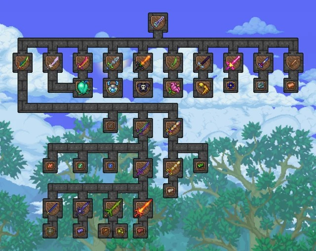

Melee
Las armas cuerpo a cuerpo son armas que infligen daño cuerpo a cuerpo y se usan en combate de corto a medio alcance. Su característica distintiva es que no consumen munición ni maná al usarlas, por lo que el jugador puede seguir usándolas cuando quiera.Rango
Los arqueros pueden atacar desde la distancia, infligiendo un daño alto a un solo objetivo, con daño por perforación o de área. Utilizan armas como arcos y pistolas, así como objetos arrojadizos. Los usuarios a distancia deben adquirir constantemente Municiones, a menos que utilicen la Carcaj eterno o la Petaca de mosquete eterna o utilicen un arma a distancia que no requiera munición, como la >Toxicarpa.Mago
Los magos son frágiles pero muy variados en su estilo de ataque, a menudo utilizando mecánicas especiales como búsqueda automática de objetivos, robo de vida y daño de área. Se ven limitados por su dependencia del Maná, que se regenera muy lentamente a menos que esté activo el aumento de regeneración de maná. Los usuarios de magia a menudo pueden mantener su maná usando estrellas de maná al enfrentarse a muchos enemigos a la vez, pero deben crear o comprar pociones de maná si desean recuperar maná instantáneamente durante las peleas contra jefes. La mayoría de las armas mágicas anteriores a Plantera están especializadas en el control de multitudes, con un daño individual más débil que otras clases.Invocador
Esta es la clase más dificil de todo el juego,* Los invocadores infligen la mayor parte de su daño utilizando súbditos autónomos y/o centinelas, y sus ataques suelen tener una excelente precisión. Sin embargo, la mayoría de los conjuntos de armadura de invocación tienen poca defensa a cambio de su alto potencial de daño. Los Látigos son armas principales que se enfocan en los invocadores y aumentan su daño. Si bien muchos jugadores aceptan desafíos en los que solo se permite el daño de invocación (Látigos, armas de invocación y Monturas), la clase invocador fue equilibrada teniendo en cuenta la idea de que el jugador también use el arma normal más fuerte disponible además de los súbditos y los látigos.Armas melee
- Filo de la noche
- Excalibur
- Terrablade
Armadura melee
- Minituburón
- Megatiburón
- Arco de tormentas de Dédalo
Armas de rango
- Minituburón
- Megatiburón
- Arco de tormentas de Dédalo
Armadura de rango
- Bastón de limo
- Bastón óptico
- Bastón del dragón estelar
Armas de mago
- Varita de chispas
- Serpiente de cristal
- Esfera magnética
Armadura de mago
- Armadura mago
- Armadura mago
- Armadura mago
Armas de invocador
- Bastón de limo
- Bastón óptico
- Bastón del dragón estelar
Armadura de invocador
- Armadura invocador
- Armadura invocador
Accesorios de invocador
- Accesorio inv
- Accesorio inv
